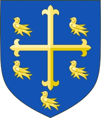
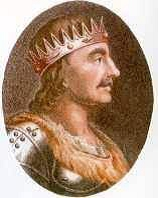

196897877224 King Eggberth
Kung av Wessex.

Barn med ?
Barn:
Æthelwulf of Wessex (795? - 858)
Personhistoria
Årtal
Ålder
Händelse
795?
Sonen
98448938612 King Æthelwulf of Wessex
föds omkring 795 Aachen, Tyskland
[1]
849
Barnbarnet
49224469306 King Alfred The Great
föds 849 Wantage, Berkshire, England
[2]
858
Sonen
98448938612 King Æthelwulf of Wessex
dör 858-01-13 Stambridge, England
[1]
899
Barnbarnet
49224469306 King Alfred The Great
dör 899-10-26
[2]
Bilder

Källor
[1]
Lista över Englands regenter
[2]
Wikipedia